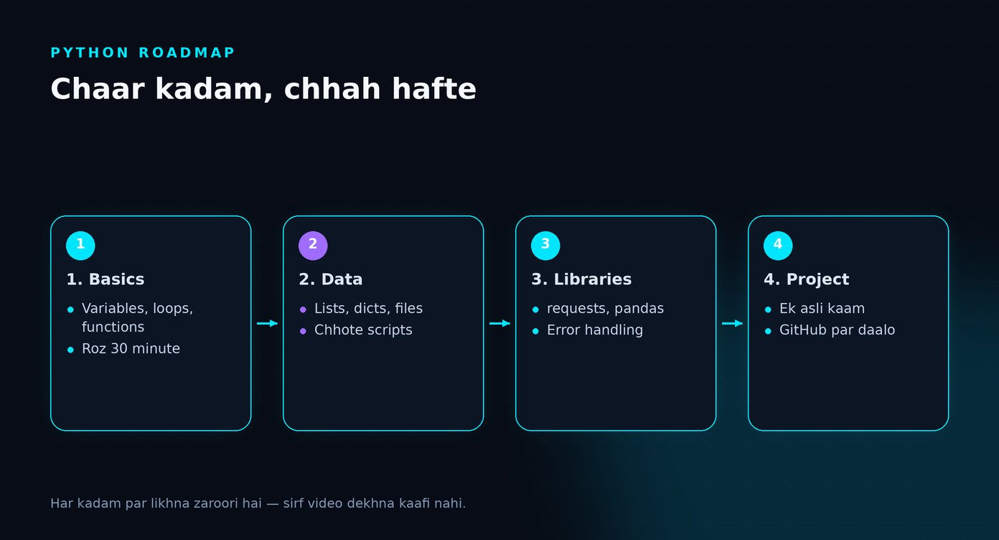
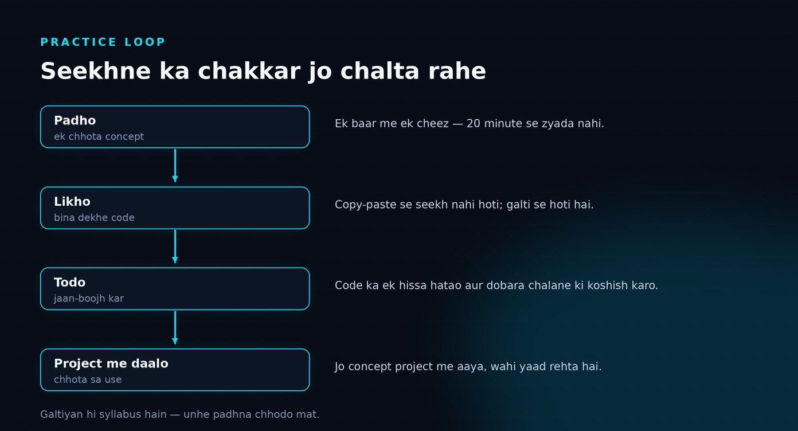

Python Seekhne Ka Roadmap: 60 Din Me Shuruaat Kaise Karein

Python सीखने की सबसे बड़ी समस्या यह नहीं है कि वह मुश्किल है। समस्या यह है कि सामग्री इतनी ज़्यादा है कि शुरुआत करने वाला चार वीडियो देखकर रुक जाता है — सब कुछ अलग लगता है, और कोई नहीं बताता कि कल सुबह कौन सी चार लाइनें लिखनी हैं।
एक बात पहले ही साफ़ कर दूँ — यह guide किसी course की जगह नहीं है, बल्कि उसके साथ चलने वाला नक्शा है। इसमें मैं एक साफ़ रास्ता दूँगा: 60 दिन का plan, चार कदम, पहला program step-by-step, practice का loop, दस छोटे projects जो सच में किसी काम के हैं, debugging का तरीका, और वे छह गलतियाँ जो साल भर में भी शुरुआत नहीं करने देतीं।
छोटा जवाब: पहले दो हफ़्ते basics — variables, loops, conditions, functions. अगले दो हफ़्ते data — lists, dictionaries, files और errors. फिर दो हफ़्ते किसी एक direction में एक छोटा project. रोज़ 30–45 मिनट, और हर दिन अपने हाथ से code लिखें। साठ दिन में आप एक चलता हुआ project दिखा सकते हैं — बशर्ते देखने और लिखने का अनुपात 1:2 रहे।
Python kya hai — aur kyun
Python एक general-purpose programming language है जिसकी खास बात उसकी साफ़ पढ़ाई है। वही काम जो किसी दूसरी language में 15 lines में होता है, Python में 4 lines में हो सकता है। यही वजह है कि यह शुरुआत के लिए सबसे आम चुनाव है, और साथ ही data, automation, web और AI में सबसे ज़्यादा इस्तेमाल भी होती है।
Python से आज ये काम होते हैं: छोटे scripts जो files और folders सँभालें, websites का backend, data की सफ़ाई और analysis, machine learning के models, और test automation. यह भी जान लें कि Python हर जगह सबसे तेज़ नहीं है — mobile apps और बहुत भारी game engines में यह पहला चुनाव नहीं है। पर सीखने और ज़्यादातर काम के लिए यह सबसे व्यावहारिक भाषा है।
60 दिन ka plan
| हफ़्ते | विषय | आप क्या कर पाएँगे |
|---|---|---|
| 1 | Install, variables, print, input | छोटे calculator जैसे programs |
| 2 | if/else, loops, functions | Logic वाले छोटे games |
| 3 | Lists, dictionaries, strings | Data इकट्ठा करके summary निकालना |
| 4 | Files, errors, modules | CSV पढ़कर report बनाना |
| 5 | एक library (requests या pandas) | बाहर से data लाना |
| 6 | छोटा project + Git | GitHub पर चलता हुआ project |
| 7–8 | Project सुधारना, tests, README | दिखाने लायक portfolio piece |
इस plan में एक बात जान-बूझकर छोड़ी गई है — बहुत सारे topics। शुरुआत में decorators, generators और async जैसी चीज़ें सीखने की ज़रूरत नहीं; वे तब आएँगी जब कोई असली project उनकी माँग करेगा। जो लोग पहले महीने में पूरी language खत्म करने की कोशिश करते हैं, वे अक्सर तीसरे हफ़्ते में रुक जाते हैं।
हर हफ़्ते का एक "exit test" रखें — जैसे चौथे हफ़्ते आप बिना देखे एक CSV पढ़कर उसका average निकाल सकें। अगर नहीं कर पाए, तो अगले हफ़्ते पर न जाएँ। जल्दी बढ़ने से अच्छा है धीरे पर पक्का बढ़ना।
चार कदम, एक क्रम
1. Basics: variables, types, conditions, loops, functions. यहाँ जल्दबाज़ी सबसे महंगी है, क्योंकि आगे की हर चीज़ इन्हीं पर टिकी है।
2. Data: lists, dictionaries, strings के methods, और files पढ़ना-लिखना। असली काम का 80% इसी में होता है।
3. Libraries: एक बार में एक। Automation के लिए requests और os, data के लिए pandas, web के लिए flask या fastapi. पाँच library एक साथ नहीं।
4. Project: एक असली काम जो आपको रोज़ परेशान करता है — जैसे bank statement साफ़ करना या किसी website से data लाना।
पहला program, step-by-step
Python की official site से installer लें और install करते समय "Add Python to PATH" वाला option चुनें (Windows पर)। फिर terminal खोलकर जाँचें:
python --versionअब एक folder बनाएँ और उसके अंदर virtual environment — यह एक अलग बंद डिब्बा है जहाँ आपकी libraries रहती हैं, ताकि दूसरे projects पर असर न पड़े:
mkdir python-start && cd python-start
python -m venv .venv
# Windows
.venv\Scripts\activate
# macOS / Linux
source .venv/bin/activateअब hello.py नाम की file बनाएँ:
name = input("Aapka naam kya hai? ")
print(f"Namaste, {name}!")
numbers = [4, 8, 15, 16, 23, 42]
total = sum(numbers)
print(f"Total: {total}, Average: {total / len(numbers):.2f}")चलाएँ:
python hello.pyइस छोटे program में चार चीज़ें हैं जो पूरी language की नींव हैं: variable (name), list (numbers), built-in function (sum), और f-string जो value को text में डालता है। इन्हीं के आसपास बाकी सब घूमता है।
Practice ka loop

पढ़ो: एक बार में एक concept, 20 मिनट से ज़्यादा नहीं।
लिखो: किताब बंद करके वही code फिर से लिखें। अगर अटकें, तो देख लें — पर copy-paste न करें।
तोड़ो: जान-बूझकर code का एक हिस्सा हटाएँ और देखें क्या error आता है। Error पढ़ना सीखना, Python सीखने का आधा हिस्सा है।
Project में डालो: जो concept आज सीखा, उसे अपने चल रहे project में कहीं इस्तेमाल करें।
दस छोटे projects
- Unit converter: input लें, output दें — conditions और functions का अभ्यास।
- Expense tracker (CSV): खर्च लिखें, महीने का total निकालें — files और lists.
- Password generator: length पूछकर random password — strings और modules.
- File organizer: downloads folder को extension के हिसाब से साफ़ करें —
osऔरshutil. - Website checker: list में दिए URLs का status देखें —
requestsऔर error handling. - CSV report: बिक्री का data पढ़कर top 5 products निकालें — dictionaries और sorting.
- Quiz game: सवालों की list, score, और दोबारा खेलने का option.
- Weather CLI: किसी public API से तापमान लाएँ — JSON और API basics.
- Backup script: एक folder की zip copy बनाएँ — dates और files.
- छोटा web app: Flask में एक page जो form लेकर जवाब दे — पहला backend.
इनमें से तीन पूरे कर लें, तो आपके पास बोलने के लिए ठोस चीज़ होगी। दस adhoorे projects से तीन पूरे बेहतर हैं। हर project का अपना folder रखें और उसमें दो line की README लिखें — क्या बनाया, कैसे चलाएँ। जब किसी को दिखाना हो, तो यही README सबसे पहले पढ़ा जाएगा।
Debugging kaise karein
Error message पढ़ने की आदत सबसे पहले डालें। Python का traceback नीचे से पढ़ें — आख़िरी line असली कारण बताती है, और उसके ऊपर की lines बताती हैं कि code कहाँ से गुज़रा।
तीन आम errors से शुरुआत होती है। SyntaxError — कोई bracket, quote या colon छूटा है। NameError — variable का नाम गलत लिखा या पहले define नहीं किया। TypeError — text और number को जोड़ने की कोशिश, जैसे "5" + 3.
जब error साफ़ न हो, तो print() से values देखें, और बड़े code में breakpoint() लगाकर एक-एक line चलाएँ। जो लोग debugging नहीं सीखते, वे हर बार किसी और से पूछते हैं — और वही आदत सीखने की रफ्तार तोड़ देती है।
Packages aur requirements.txt
जब आप कोई library इस्तेमाल करें, तो उसे virtual environment में install करें:
pip install requests
pip freeze > requirements.txtrequirements.txt में आपकी सारी libraries के नाम और versions लिखे होते हैं। इसे project के साथ रखें, ताकि दूसरा इंसान (या आप छह महीने बाद) एक command से वही माहौल बना सके: pip install -r requirements.txt.
दो आदतें याद रखें। पहला — .venv folder कभी Git पर न भेजें; वह हर machine पर दोबारा बनता है और उसका साइज़ बड़ा होता है। दूसरा — versions pin करें, यानी requests==2.32.3 लिखें, सिर्फ़ requests नहीं। वरना कल कोई नई version आने पर आपका code बिना वजह टूट सकता है।
अपने code की छोटी जाँच
Test लिखना सुनने में बड़ा काम लगता है, पर शुरुआत में एक function की जाँच के लिए assert काफ़ी है:
def average(nums):
return sum(nums) / len(nums)
assert average([2, 4, 6]) == 4
print("sab theek")जब आप कोई function बदलें, तो यह छोटी जाँच तुरंत बता देती है कि पुराना काम अब भी ठीक है या नहीं। बाद में आप pytest जैसे tool पर जा सकते हैं, पर आदत यहीं से शुरू होती है।
आगे किस रास्ते पर
Automation: files, Excel, email और browser के काम अपने आप करना। सबसे तेज़ फायदा यहीं मिलता है, क्योंकि आप अपना ही काम आसान करते हैं।
Data: pandas, charts और SQL के साथ। Data science roadmap वाली guide में इसका पूरा क्रम है।
Web backend: Flask या FastAPI से API बनाना। इसके लिए API basics पहले पढ़ लें, ताकि request और response का मतलब साफ़ हो।
AI/ML: Python ही यहाँ की भाषा है, पर पहले data और statistics ठीक करें — वरना model का नतीजा समझ नहीं आएगा।
चारों रास्तों पर एक चीज़ समान है: Git. अपना code GitHub पर रखें, चाहे छोटा हो। Git और GitHub वाली guide से शुरुआत करें।
छह गलतियाँ जो शुरुआत रोक देती हैं
1. Tutorial hell. एक के बाद एक course, और अपना code कुछ नहीं। नियम बनाएँ — हर घंटे की video के बाद दो घंटे अपना code.
2. Copy-paste. देखकर चिपकाने से दिमाग़ नहीं सीखता। हाथ से लिखें, भले धीमा लगे।
3. Perfect tools का इंतज़ार। "सही laptop" या "सही editor" का इंतज़ार करते हुए महीने निकल जाते हैं। जो है उसी से शुरू करें।
4. बहुत सारी libraries एक साथ। पाँच tools आधे-अधूरे सीखने से एक tool पूरा सीखना बेहतर है।
5. Error से डरना। Error आपका दुश्मन नहीं, सबसे तेज़ teacher है। जो उसे पढ़ना सीख जाता है, वह दूसरों से कम पूछता है।
6. अकेले सीखना। हर हफ़्ते किसी को अपना काम दिखाएँ — दोस्त, forum या छोटा group. समझाने से अपनी समझ साफ़ होती है।
Mera anubhav
मैंने पहली बार Python में एक script लिखी जो 300 files का नाम बदलती थी। उसमें एक गलती थी — loop के अंदर path गलत बन रहा था — और मैंने बिना test किए चला दी। 40 files का नाम बिगड़ गया। उस दिन मैंने दो आदतें सीखीं: पहले 3 files पर test करो, और चलाने से पहले backup रखो।
दूसरी बात जो मैंने सीखी: छोटे functions लिखना। जब मैंने एक 60-line script को पाँच छोटे functions में तोड़ा, तो गलती ढूँढ़ना 10 मिनट का काम बन गया। पहले वही गलती घंटों लेती थी।
एक और सबक जो देर से समझ आया: code को दोबारा पढ़ने लायक लिखना। शुरुआत में मैं सब कुछ एक ही file में लिखता था, और तीन महीने बाद उसे समझना मुश्किल हो जाता था। अब मैं function का नाम ऐसा रखता हूँ जो काम बता दे — clean_rows, monthly_total — और हर function के ऊपर एक line की टिप्पणी लिखता हूँ। यह आदत बाद में debugging का आधा समय बचा देती है।
तीसरी बात: जो चीज़ आप रोज़ करते हैं, उसे automate करना सबसे अच्छा project है। मेरा पहला असली project एक script था जो हर सोमवार सारी बिक्री की CSV files इकट्ठी करके एक report बनाता था। वह सुंदर नहीं था, पर उसने हफ़्ते में दो घंटे बचाए — और वही script मेरे resume का सबसे मज़बूत हिस्सा बनी।
नतीजा
Python सीखना एक क्रम है: basics, data, एक library, और फिर एक छोटा project. साठ दिन में अगर आपने रोज़ 30 मिनट लिखे और तीन projects पूरे किए, तो आप उन लोगों से आगे हैं जिन्होंने साल भर videos देखे। आज ही एक file बनाएँ, चार लाइन लिखें, और चलाएँ — शुरुआत इससे छोटी नहीं हो सकती।
अक्सर पूछे जाने वाले सवाल
क्या Python सीखने के लिए maths ज़रूरी है?
Basic arithmetic काफ़ी है। Data science या ML में statistics आएगी, पर शुरुआत में सिर्फ़ logic और practice चाहिए।
कितना समय लगेगा अच्छा होने में?
रोज़ 30–45 मिनट में दो महीने में basics पक्के हो जाते हैं। "अच्छा" होने का मतलब project पूरा कर पाना है, जो 4–6 महीने में आता है।
Python 2 या 3?
Python 3. Python 2 अब support में नहीं है, और नए सारे tutorials Python 3 के हैं।
कौन सा editor इस्तेमाल करें?
VS Code शुरुआत के लिए सबसे आसान है। जो भी चुनें, उसे छोड़-छोड़कर न बदलें — editor बदलने से code नहीं सुधरता।
क्या Python से job मिल सकती है?
हाँ, पर सिर्फ़ language से नहीं। SQL, Git और एक domain — web, data या automation — के साथ मिलकर यह job देती है।